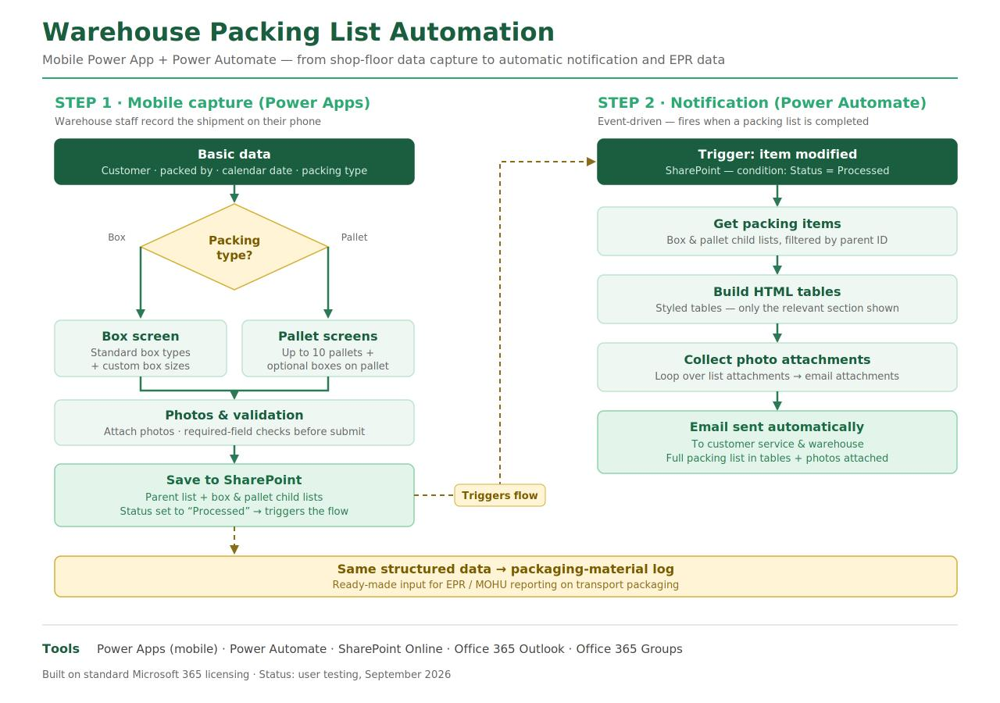
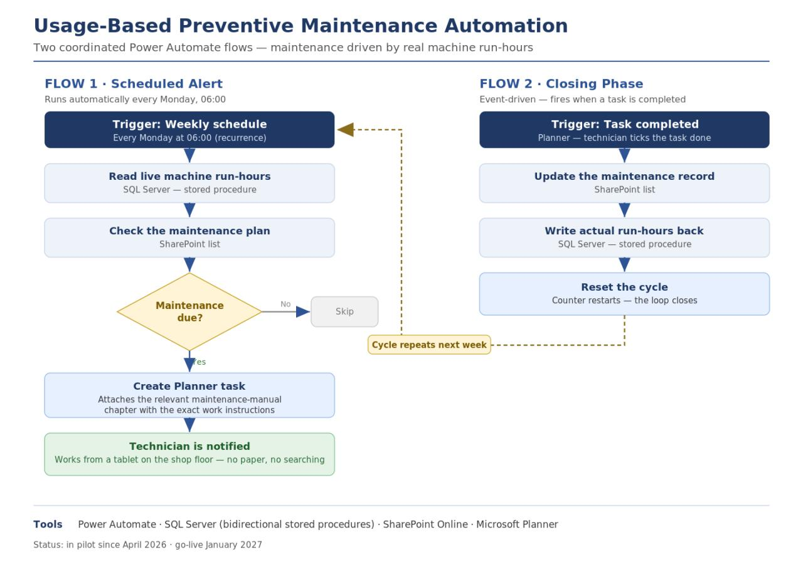

I turn shop-floor data into decisions — and repetitive work into automated flows.
Analyst at a manufacturing SME, building reporting and automation end to end: from Oracle SQL on the ERP, through Power BI, to Power Apps and Power Automate on the shop floor.
BI & Reporting
Power BI · DAX · Power Query M · Excel
Process automation
Power Automate · Power Apps · SharePoint · Planner
Data engineering
Oracle SQL · INFOR ERP · SQL Server · Microsoft Fabric
Selected work

Warehouse Packing List Automation
A mobile Power App replaces a generic form: structured box and pallet data, photos, and an automatic email to customer service — plus ready input for EPR / MOHU reporting.

Usage-Based Preventive Maintenance
Maintenance driven by real machine run-hours: weekly checks against the plan, Planner tasks with the right manual chapter, and a closed loop back to SQL Server.
Product & Manufacturing Complexity Analysis
Management-facing view of the product portfolio, customer base and manufacturing complexity, powered by an Oracle SQL engine on the ERP data.
Deep in the ERP, practical on the shop floor.
I work across manufacturing analytics, business intelligence and process automation — and I administer the company's Microsoft 365 tenant, so I can take a solution from data model to deployed app.
My background in digital marketing shapes how I present data: clear stories for management, simple tools for the people who use them every day.